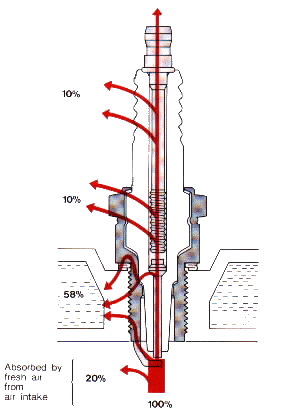
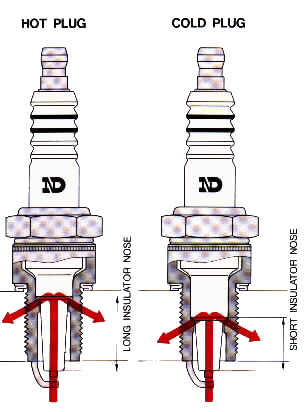
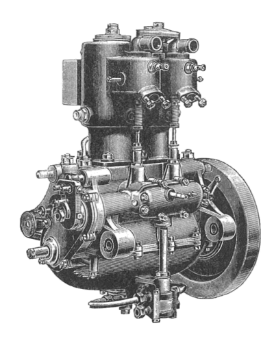
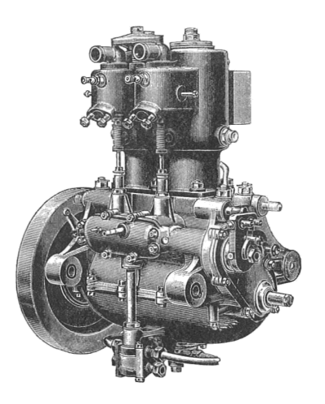

¶ Spark plugs....We can make this easy or we can make it hard. Let's start with easy. After running for a while normally, stop the bike and take the spark plugs out. They should look a light chocolate brown in color. If , black and sooty the engine is running too rich in the fuel departement or too cold of spark plug. If black and shiny (oily) they are oil fouled. If they are whitish you are running too lean a fuel mixture and/or wrong ignition timing or too hot of spark plug. When you see this, your engine is about to blow up!!!
If you would like to see more Spark Plug Images... 29 to be exact, Click Here. Be patient, it takes awhile to load.
Now the harder stuff. A spark plug does not make your engine run hotter or colder. The terms hot or cold refer to the temperature of the tip of the spark plug itself. The plug must keep a temperature of, between 752 and 1652 degrees Fahrenheit. If it gets too hot it can fire off the air/fuel mixture at the wrong time. This can cause detonation and/or pinging which will put a hole in your piston... not good. If it gets too cold it will not burn off the carbon and fuel deposits on it's tip and the plug will foul out (stop working) not good either.
The heat range of a spark plug is controled by the length of the center electrode. A longer one is hotter because it takes longer for the heat to flow through it to the cylinder head. As you might think the cooler plug has a short center electrode.

To get a true plug color reading you must run the engine,on a level road, at the throttle setting that you want to test, for about a mile, then kill the ignition, pull the clutch in and coast to a stop. Then pull the plug and look at it. This could be a real thrill on most of the newer street bikes.
As the engine ages and more oil gets past the rings a hotter plug may be in order. If you ride at low speeds all the time a hotter plug will keep the plugs from fouling. If high speeds are your thing, a cooler plug
may be just the ticket. Don't be afraid to pull that plug out and give 'er a read!

 |
 |
Copyright © 1999-2000 dansmc.com. All rights reserved.